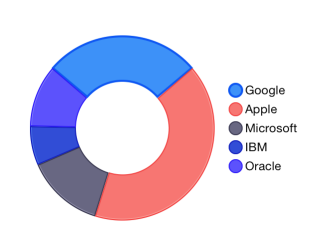

Chart Series: Donut
TKChartDonutSeries derives from TKChartPieSeries and it represents a donut chart. The innerRadius property determines the width of the donut, and it is measured in values between 0 and 1. The higher value you set in the range between 0 and 1, the thinner the donut will be. For example, a value of 0.9 will make the donut chart take only 0.1 percent of the whole pie chart surface.
Here is an example of a donut chart:
Objective-C
NSMutableArray *pointsWithValueAndName = [[NSMutableArray alloc] init];
[pointsWithValueAndName addObject:[[TKChartDataPoint alloc] initWithName:@"Google" value:@20]];
[pointsWithValueAndName addObject:[[TKChartDataPoint alloc] initWithName:@"Apple" value:@30]];
[pointsWithValueAndName addObject:[[TKChartDataPoint alloc] initWithName:@"Microsoft" value:@10]];
[pointsWithValueAndName addObject:[[TKChartDataPoint alloc] initWithName:@"IBM" value:@5]];
[pointsWithValueAndName addObject:[[TKChartDataPoint alloc] initWithName:@"Oracle" value:@8]];
TKChartDonutSeries *series = [[TKChartDonutSeries alloc] initWithItems:pointsWithValueAndName];
series.innerRadius = 0.5;
[chart addSeries:series];
chart.legend.hidden = NO;
chart.legend.style.position = TKChartLegendPositionRight;
Swift
var pointsWithValueAndName = [TKChartDataPoint]()
pointsWithValueAndName.append(TKChartDataPoint(name: "Google", value: 20))
pointsWithValueAndName.append(TKChartDataPoint(name: "Apple", value: 30))
pointsWithValueAndName.append(TKChartDataPoint(name: "Microsoft", value: 10))
pointsWithValueAndName.append(TKChartDataPoint(name: "IBM", value: 5))
pointsWithValueAndName.append(TKChartDataPoint(name: "Oracle", value: 8))
let series = TKChartDonutSeries(items: pointsWithValueAndName)
series.innerRadius = 0.5
chart.addSeries(series)
chart.legend().hidden = false
chart.legend().style.position = TKChartLegendPosition.Right
